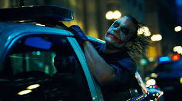

EL CABALLERO OSCURO
Mi opinión personal
Esta es una pelicula que segun muchos criticos, es la mejor de justicieros de la historia. Yo pienso que esta es la mejor pelicula de heroes ya que va mas alla de el estandar que sigue, por ejemplo, Marvel.
Cuenta con tanto un guión excepcional y un montaje cinematografico digno de el director Christopher Nolan
El actor protagonista es Christian Bale
Esta es una escena que para mi significa el momento de una peli de heroes en el que pasa algo diferente al estandar del cine. También me gusta mucho por que, bajo mi opinion, este es el mejor actor que ha hecho de Joker de la historia. Por desgracia falleció poco tiempo despues del estreno de la pelicula, cuando recibió el oscar. .
 TRAILER